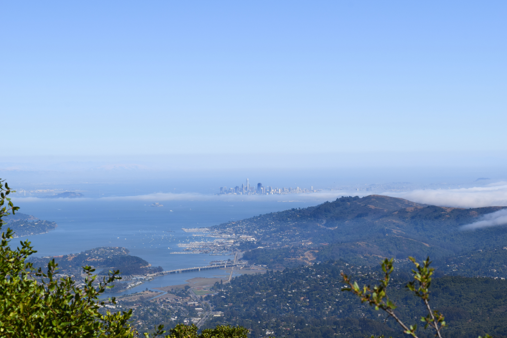

On another hiking path, we climbed to the top and we were able to see
San Francisco in the distance. To think this place was only 1 hour away from
the city is incredible. When I move, I would love to live in a place like this
where I can escape the city life whenever I want to.
